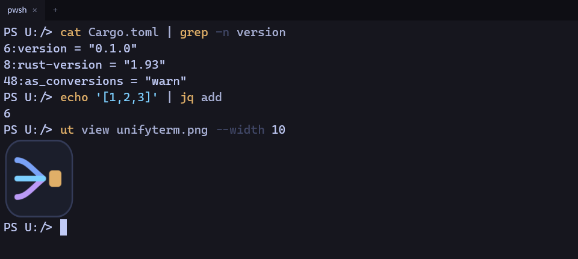
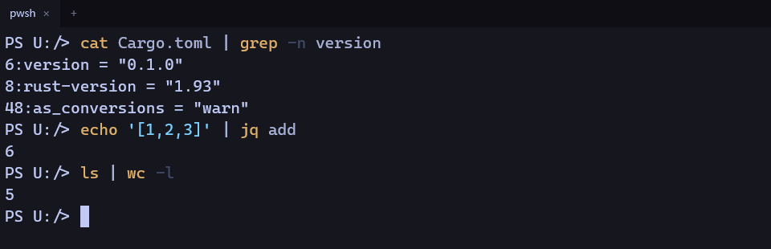
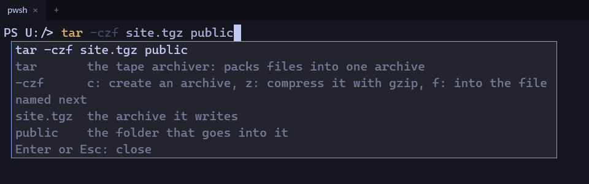

UnifyTerm
One terminal. Valid on Windows, macOS and Linux.
Change machines and the commands change with them. UnifyTerm keeps them the same: it runs your own shell, and brings cat, grep, jq and about a hundred more to every system, Windows included.
- Type 类型
- Terminal, with a window
- Shell 外壳
- Your own: PowerShell, cmd, bash, zsh, fish
- Commands 命令
- 99 on Windows, 114 on Linux
- Issued by 签发
- newdee, in Rust, under MIT
- Windows10 (1809) or later
- macOS11 or later
- Linuxx86_64, Vulkan
brew install newdee/tap/unifyterm
macOS and Linux, with Homebrew. The other three are one line each, without administrator rights.
The same commands at every border
PowerShell says Get-Content. bash says cat. Your fingers say cat either way. UnifyTerm ships the Unix commands as one program, ut, and puts them ahead of PowerShell's aliases, so cat, ls, grep, find, sed and jq mean the same thing on all three systems.
Paths come out with / everywhere. A wildcard expands the way a Unix shell expands it; in quotes it stays as you typed it. No WSL, no Git Bash, nothing else to install.
All 99 names on Windows
[ arch b2sum base32 base64 basename basenc cat cksum cmp comm cp csplit cut date dd df diff dir dircolors dirname du echo env expand expr factor false find fmt fold grep head hostid hostname join jq kill link ln ls md5sum mkdir mktemp more mv nice nl nohup nproc numfmt od paste pathchk pr printenv printf ptx pwd readlink realpath rm rmdir sed seq sha1sum sha224sum sha256sum sha384sum sha512sum shred shuf sleep sort split sum sync tac tail tee test timeout touch tr true truncate tsort tty uname unexpand uniq unlink uptime vdir wc which whoami xargs yes

A history that answers while you type
Every command your shells run is kept in one small SQLite file, with the directory it ran in, how it ended and how long it took. Start typing and the matches show under the line. Ctrl+N walks down, Enter puts one on the line, and it runs only when you press Enter again.
Commands you ran in this directory rank higher, and ones that failed rank lower. Anything that looks like a password, a token or a key is never written down. Copy the file to another machine and it works there too: a history made on Windows reads the same on Linux.

Pictures, video and markdown, where the text is
ut view photo.png puts the picture in the terminal. It scrolls away with the text above it and clears with the screen. ut view clip.mp4 plays a video through ffmpeg, without sound; q stops it.
ut md README.md lays markdown out with real tables, lists and links. In another terminal ut view takes the best that terminal can do, down to plain characters when the output goes to a pipe.

Ask what a command means
Mistype a command and a corrected one is offered. That guess is made on your machine, from the commands it can find, and needs no model. Name a model in the settings, and Ctrl+Shift+E explains the command on the line part by part, and the rest of a command shows in grey as you type.
The model's help stays off until you have named the model yourself and said yes once in the window. What will be sent is shown before you agree, and passwords, tokens and keys are replaced first. Refuse, and nothing is sent.

For the agents you run
ut mcp gives a coding agent four tools: search the history, list the last commands, list the commands ut has, read one command's help. It only reads; it runs nothing. Tell Claude Code about it with claude mcp add unifyterm -- ut mcp.
A skill file tells the agent what works here, so it stops guessing whether grep exists on Windows. If you use keepane, Ctrl+Shift+A shows its agents beside the terminal: model, cost, context, memory.

Forty-six seconds of it working
Recorded from the program itself, one picture for every key pressed. Nothing in it is drawn by hand.
Observations
What is not done, said here so that you do not find it out later.
- The builds are not signed. Windows SmartScreen and macOS Gatekeeper each ask once before the first start.
- Nobody has used the macOS build by hand yet. It is built, tested and started on a Mac in CI, and that is all.
- Video has no sound, and needs ffmpeg installed.
- PowerShell's own Tab completion still writes
\paths. What the commands print uses/. - It draws pictures sent with kitty's protocol only. Sixel and iTerm2 pictures are for
ut viewin other terminals. - This is version 0.1.0. The checks behind it are in the repository: 207 tests, and 110 more that drive the real window.
Entry
macOS and Linux
brew install newdee/tap/unifytermOr one line, for you alone, no root:
curl -fsSL https://raw.githubusercontent.com/newdee/unifyterm/main/install.sh | shWindows
scoop install https://raw.githubusercontent.com/newdee/unifyterm/main/packaging/scoop/unifyterm.jsonOr one line, for you alone, no administrator rights:
irm https://raw.githubusercontent.com/newdee/unifyterm/main/install.ps1 | iexPackages are on the releases page, each with its SHA-256 beside it: an MSI and a zip for Windows, a .dmg for each kind of Mac, a .deb and an AppImage for Linux. Both one-line scripts check that SHA-256 before they install anything.
The source is at github.com/newdee/unifyterm, under the MIT license. Settings, keys and environment variables are in the README.